السلسلة 111
السيارة (صنف B) · 25 سؤال بالصوت. حاول تجاوب بوحدك، من بعد شوف الجواب.
السؤال 1

بيّن الجواب
الجواب الصحيح: 1 و 4
هذا العلامة ديال الخطر.
- كتعلم على انني غادي نلقى ملتقى طرق على بعد 150 متر .
- في هذا ملتقى الطرق واجب عليا نعطي حق الأسبقية للي جاي من جهت ليمن.
السؤال 2
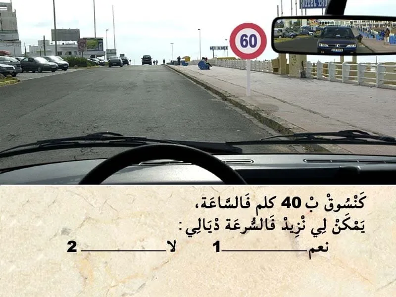
بيّن الجواب
الجواب الصحيح: 1
هذا العلامة ديال المنع. "تحديد السرعة"
كتعلم على انه ممنوع السير بأكثر من 60 كلم في الساعة.
✅ و بالتالي يمكن يمكن لي نزيد في السرعة الا كنت كنسير ب 40 كلم في الساعة. بشرط ما تفوتش 60 كلم في الساعة.
السؤال 3
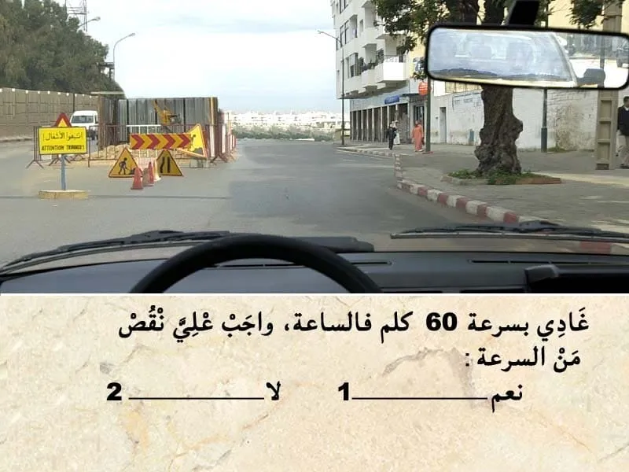
بيّن الجواب
الجواب الصحيح: 1
التشوير الطرقي كيضم علامة ديال الخطر .
- كتعلم على اشغال على الطريق.
انا غادي ب 60 كلم في الساعة. عندي خطر .
و بالتالي من الواجب عليا ننقص من السرعة .
السؤال 4

بيّن الجواب
الجواب الصحيح: 2
قبل التجاوز . واجب عليا نراقب، تم نبه، تم ننحاز.
في هذا الحالة الطريق خاوية . طريق فيها السير في الإتجاهين.
⛔ و لكن قدامي بزززاف ديال المركبات و بالتالي ما يمكنش لي نتجاوز الآن.
السؤال 5
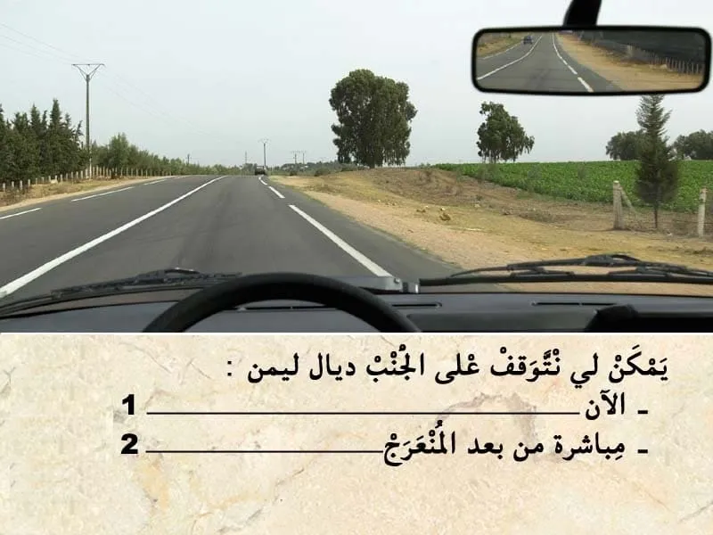
بيّن الجواب
الجواب الصحيح: 1
باش نتوقف قبل المنعرج من الواجب نخلي مسافة ديال 50 متر على الأقل قبل و بعد المنعرج.
في هذا الوضعية كاين اكثر من خط في جنب الطريق و بالتالي يمكن لي نتوقف الآن.
السؤال 6
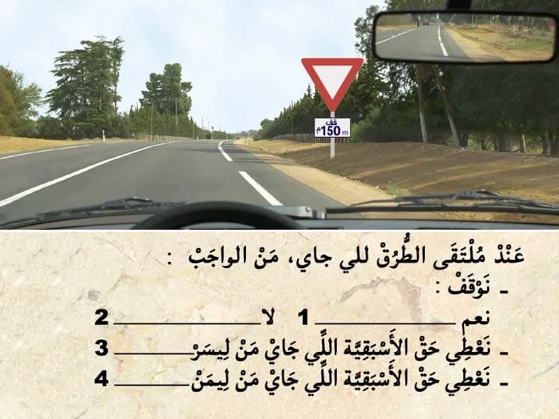
بيّن الجواب
الجواب الصحيح: 1 و 3 و 4
هذا العلامة ديال اعطاء حق الأسبقية. كتعلم بلي واجب عليا نعطي حق الأسبقية في ملتقى الطرق المقبل .
و تحت منها علامة تكميلية فيها 150 متر.
و بالتالي واجب عليا نعطي حق الأسبقية للي جاي من جهت ليمن و يلي جاي من جهت ليسر و حتى للي جاي في الإتجاه المعاكس في حالة كنت غادي ندور على اسير.
فهذا الحالة عندي قف و بالتالي واجب عليا نوقف
السؤال 7
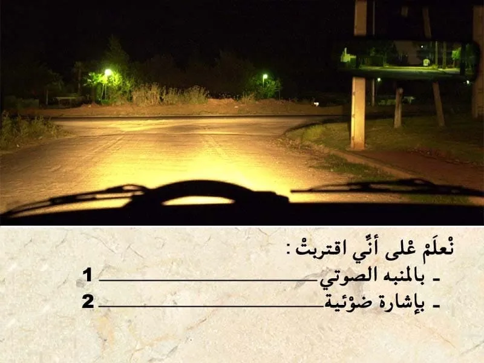
بيّن الجواب
الجواب الصحيح: 2
في هذا الحالة غادي نوصل لملتقى الطرق، باش نعلم بلي قربت يمكن لي نستعمل إشارة ضوئية بأضواء الطريق.
غادي تكون مرئية من طرف السائقين الاخرين.
السؤال 8
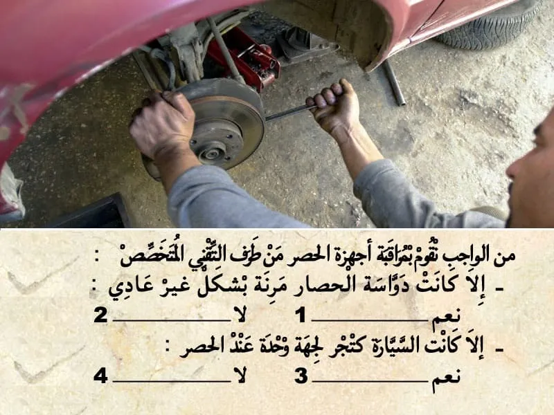
بيّن الجواب
الجواب الصحيح: 1 و 3
من الواجب مراقبة جهاز الحصار بمجرد ما يهضر اي مشكل اثناء السير .
مثل :
- مرونة دواسة الحصار بشكل غير عادي .
- في حالة عدم استقامة العبرة في الطريق اثناء الحصر.
السؤال 9
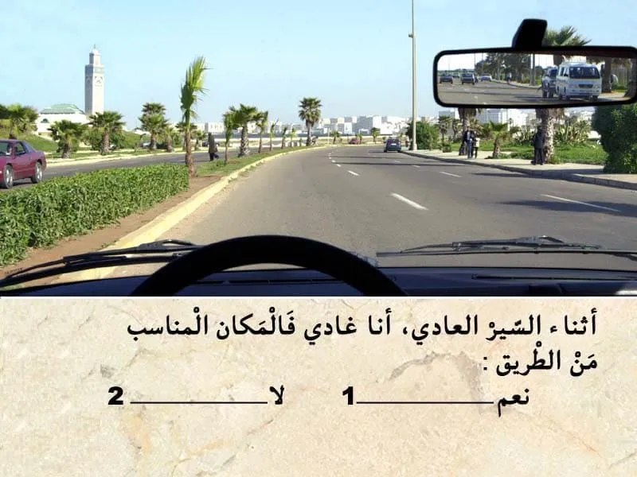
بيّن الجواب
الجواب الصحيح: 2
الطريق في الغالب كتكون مقصمة لمسالك .
في حالة الطريق لي عنده اتجاه وحيد كيكون مسلك للسير العادي و مسلك للتجاوز .
و في السير العادي من الواجب عليا نكون في المسلك لي على ليمن ديال الطريق .
اما المسلك الثاني يمكن لي نستعملوا فقط للتجاوز.
السؤال 10
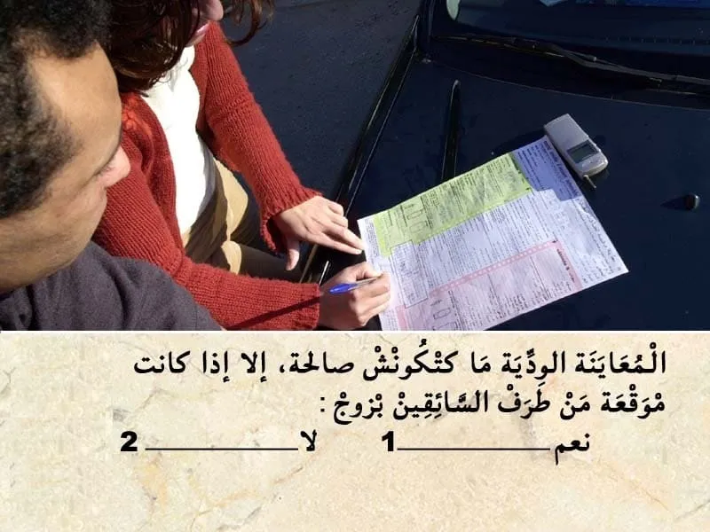
بيّن الجواب
الجواب الصحيح: 1
✍عند وقوع حادثة سير أدت إلى خسائر مادية، يجب على السائق الحفاظ على الهدوء والحرص على ملء المعاينة الودية بعناية.
لا تعتبر المعاينة الودية إطلاقا اعترافا بالمسؤولية في حال حدوث أضرار بدنية، تقوم مصالح الأمن الوطني أو الدرك الملكي بإنجاز تقرير يرفق بهذا المحضر.
✍تعبر هذه المعاينة عن الأحداث والحقائق وتستخدم من أجل التعويضات اللازمة وهي ضمان لتسوية سريعة للحوادث لذا ينصح بالاحتفاظ بنموذج فارغ منها في المركبة.
✍يجب على السائق إبلاغ مؤمنه "شركة التأمين" عن الحادثة داخل أجل لا يتجاوز 5 أيام.
✅ يتكون محضر المعاينة الودية من العناصر الأساسية التالية:
✔ تاريخ الحادثة. ✔ المكان بالتحديد. ✔ المصابون حتى بإصابات خفيفة. ✔ الأضرار المادية التي تلحق بغير المركبتين أ و ب. ✔ الأضرار المادية التي تلحق بغير المركبتين أ و ب. ✔ الشهود. ✔ المركبة أ / المركبة ب. ✔ المركبة. ✔ المؤمن عليه. ✔ السائق. ✔ توضيح لنقطة الاصطدام الأصلية. ✔ الأضرار الظاهرة. ✔ الرسم التخطيطي. ✔ الملاحظات. ✔ التوقيعات.
السؤال 11
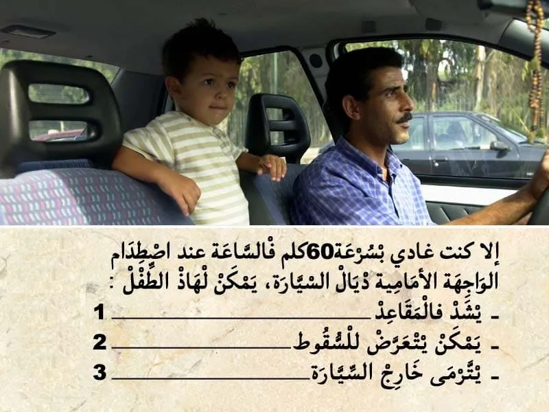
بيّن الجواب
الجواب الصحيح: 3
في هذا الحالة هذا الطفل ما جالسش في المقعد المخصص ليه .
في حالة الإصطدام يمكن يترمى خارج السيارة.
السؤال 12
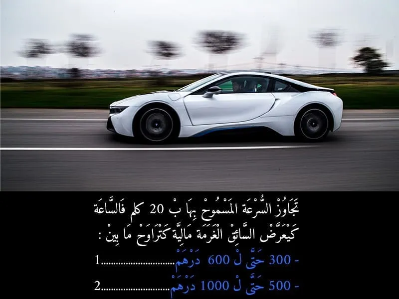
بيّن الجواب
الجواب الصحيح: 2
🚨🚨 سؤال تم تصحيحه نتيجة للتعديل الاخير في المخالفات.
- تجاوز السرعة ب 20 كلم في الساعة كتعتبر مخالفة من الدرجة الثانية و كتعرض السائق لغرامة مالية من 500 حتى ل 1000 درهم .
- و ما كتعرض السائق لسحب نقاط من رصيد رخصة السياقة .
- 🚨فقط التغيير في عدد النقط المسحوبة. بالنسبة لتجاوز السرعة ب 20 كلم في الساعه . اما الا تجاوزات 20 كيتم سحب 2 ديال النقاط .
السؤال 13
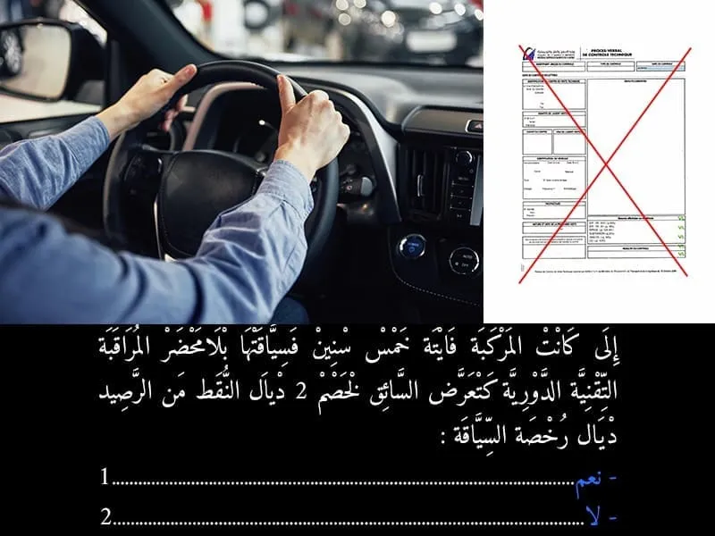
بيّن الجواب
الجواب الصحيح: 2
في حالة عدم التوفر على شهادة الفحص التقني بالنسبة للمركبات لي تجاوز العمر ديالها 5 سنين .
كتعتبر مخالفة الدرجة الأولى . فيها غرامة مالية ديال 700 درهم.
- و لا يتم إيداع المركبة في المحجز.و انما يتم الاحتفاظ بيها الى ان يقوم السائق بالادلاء بشهادة تثبث القيام بالفحص التقني.
- و يتم الاحتفاظ بشهادة التسجيل .
- كما يتم خصم 3 ديال النقط.
السؤال 14
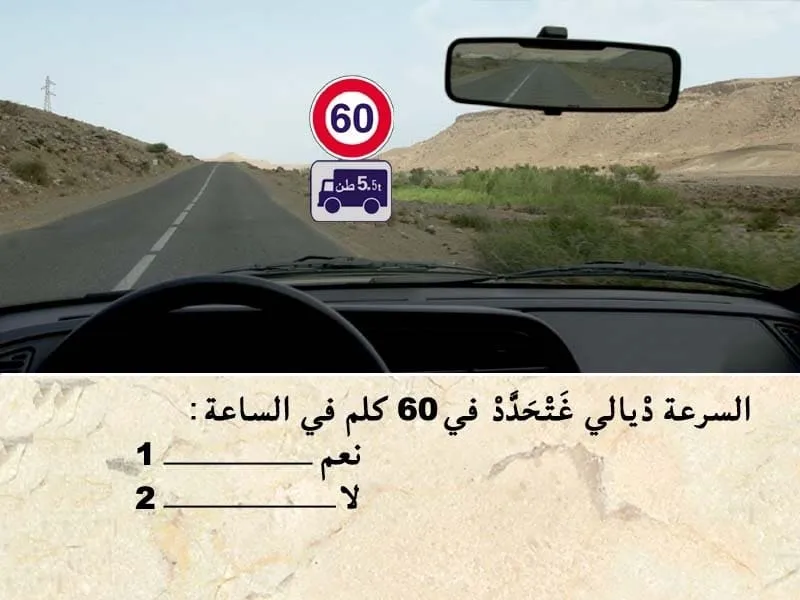
بيّن الجواب
الجواب الصحيح: 2
هذا العلامة ديال المنع. "تحديد السرعة"
كتعلم على انه ممنوع السير بأكثر من 60 كلم في الساعة.
✅ العلامة التكميلية كتعلم بلي المنع كيخص الشاحنات. و بالتالي ما كتعنينيش في.
السؤال 15
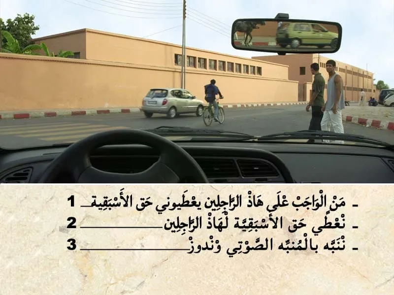
بيّن الجواب
الجواب الصحيح: 2
من الواجب عليا نوقف و نعطي حق الأسبقية لهذا الراجلين.
السؤال 16
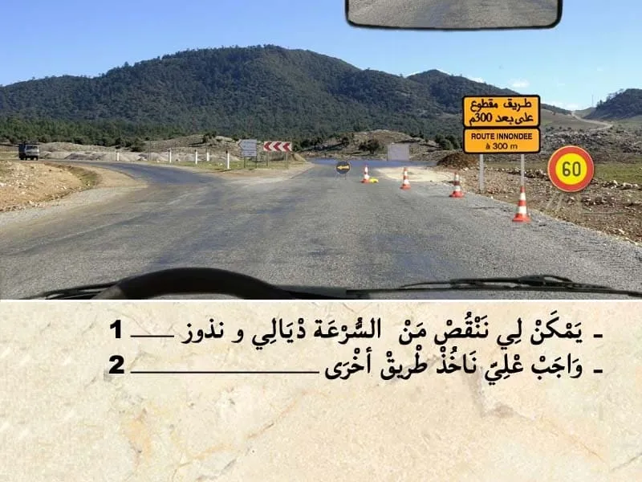
بيّن الجواب
الجواب الصحيح: 2
هذا العلامة ديال الإرشاد. باللون الأصفر. "تشوير مؤقت"
- كتعلم على طريق مقطوع على بعد 300 متر .
- و حيت عندي علامة 🔵 ديال الاجبار فوسط المسلك و فيها سهم لليسار. كيعني ممنوع عليا نكمل السير للقدام و واجب عليا نغير الإتجاه على ليسر .
السؤال 17
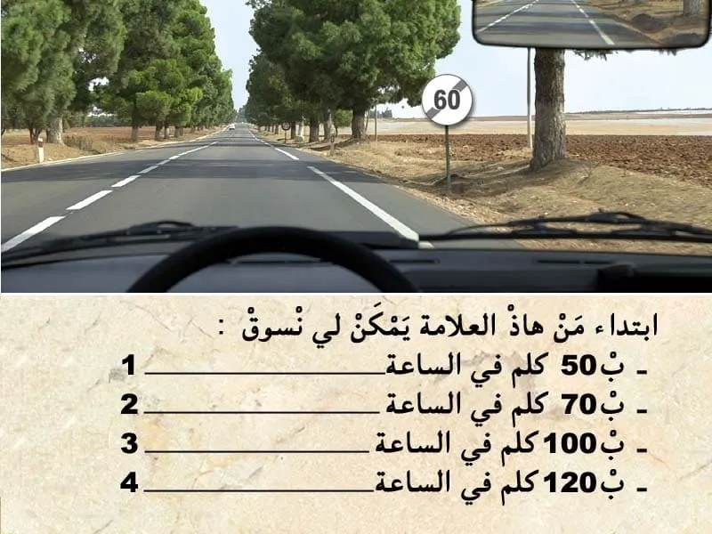
بيّن الجواب
الجواب الصحيح: 1 و 2 و 3
هذا العلامة ديال نهاية المنع .
- كتعلم على نهاية جميع انواع المنع "التجاوز ،السرعة , المنبه الصوتي".
ابتداء من العلامة يمكن لي نسير بسرعة 100 كلم في الساعة حيت أنا في طريق وطنية.
⛔ ما يمكنش لي نمشي ب 120 كلم في الساعة .
السؤال 18

بيّن الجواب
الجواب الصحيح: 2
فهذا الحالة عندي غياب التشوير الطرقي.
و بالتالي حق الأسبقية للي جاي من جهت ليمن .
يعني لي ليمن ديالوا خاوي يدوز هو الأول .
و بالتالي ندوز من بعد السيارة البيضاء.
السؤال 19
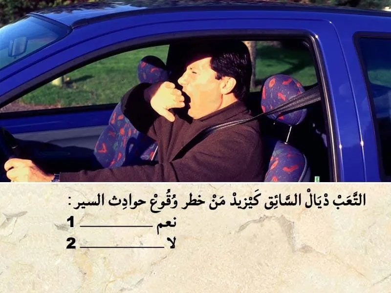
بيّن الجواب
الجواب الصحيح: 1
بمجرد ما السائق يبدى يحس بالنعاس.
كيتوجب عليه يوقف باش يرتاح . حيت ممكن في اي لحظة يباغته النعاس .
و من بين الأسباب لي مكن تكون سبب في حوادث السير هي التعب .
السؤال 20
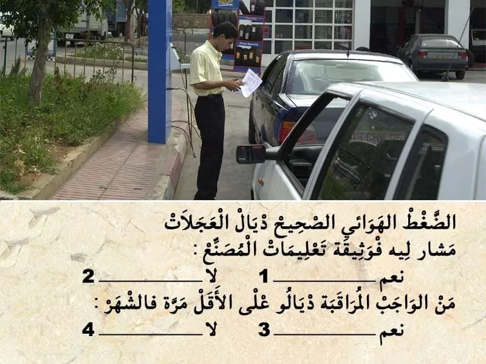
بيّن الجواب
الجواب الصحيح: 1 و 3
الضغط الهوائي الصحيح كيكون مشار ليه فوثيقة تعليمات المصنع.
غالبا كيكون فجنب الباب ديال ليسر من جهت السائق.
و من الواجب المراقبة ديالوا على الأقل مرة فالشهر.
السؤال 21
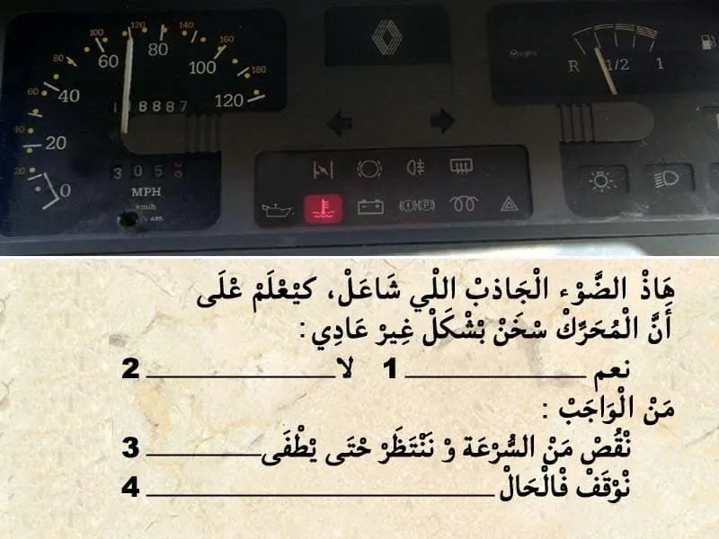
بيّن الجواب
الجواب الصحيح: 1 و 4
الا شعل ضوء من الأضواء الحمراء ديال لوحة القيادة.
هذا كيعني انه كاين عطب في السيارة و بالتالي من الواجب التوقف في الحين .
في هذا الحالة هذا الضوء الجادب هو ضوء كيعلم على أن المحرك سخن بشكل غير عادي.
السؤال 22
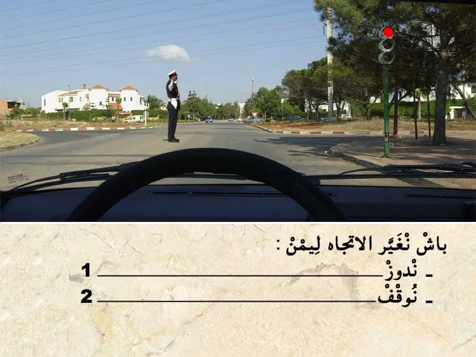
بيّن الجواب
الجواب الصحيح: 1
في وجود شرطي المرور.
كنتبعوا إشارة شرطي المرور . فهذا الحالة الشرطي عاطيني بجمله و بالتالي عاطيني إشارة باش ندوز .
و بالتالي ندوز.
السؤال 23
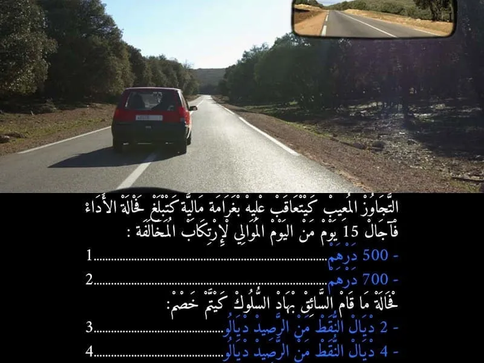
بيّن الجواب
الجواب الصحيح: 1 و 4
التجاوز المعيب كيتعتبر مخالفة من الدرجة الاولى. و كيتم خصم 4 نقاط من رصيد رخصة السياقة . و غرامة مالية 700 درهم .
- في حالة اداء الغرامة في اجل 24 ساعة كيأدي السائق لي ارتكب المخالفة 400 درهم .
- أما في حالة الاداء في اجل 15 يوم فثمن الغرامة هو 500 درهم .
- أما في حالة عدم الادء في اجل 15 كتصبح الغرامة 700 درهم .
السؤال 24
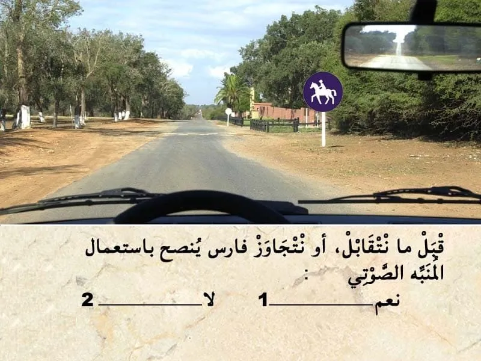
بيّن الجواب
الجواب الصحيح: 2
هذا العلامة ديال الاجبار.
كتعلم على مرور فرسان .
عند وجود هذا ينصح بعدم استعمال المنبه الصوتي.
السؤال 25
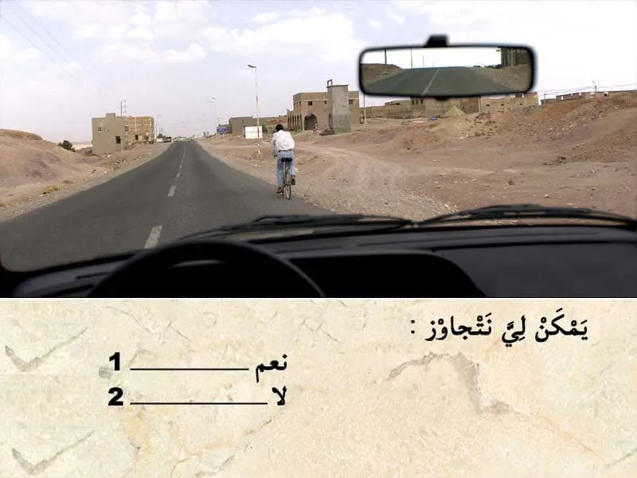
بيّن الجواب
الجواب الصحيح: 1
قبل التجاوز . واجب عليا نراقب، تم نبه، تم ننحاز.
في هذا الحالة الطريق خاوية وراية ما كاينش حتى شي حد جاي وراية و اعلم بلي غادي يتجاوز .
- الطريق قبالتي خاوية و بالتالي يمكن لي نتجاوز.